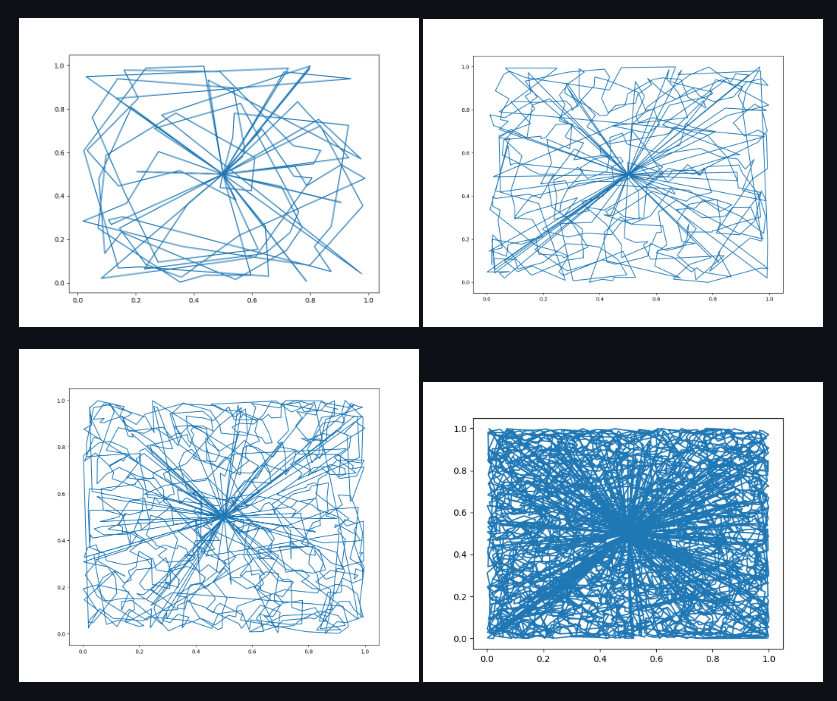

Traveling Robot Challenge with Charging
Python • Jupyter Notebook
The Traveling Salesman Problem (TSP) is a classic algorithmic challenge: given a list of locations, find the shortest route that visits each location exactly once and returns to the start. However, agents cannot simply travel indefinitely in many real-world scenarios, such as electric vehicles (EVs), drones, or robots. Due to their limited battery capacity, they need to be recharged on a regular basis. This variation is known as the Traveling Salesman Problem with Charging (TSP-C): determine the best route that minimizes the overall travel time or distance while also planning charging stops to ensure the vehicle never runs out of fuel.
In this context:
1. The agent has a limited energy budget that depletes as it travels between locations.
2. Certain nodes in the graph represent charging stations where the agent can recharge its battery.
3. The planner must balance detours for charging against overall route efficiency, a real-world constraint
absent in the standard TSP.
View repo